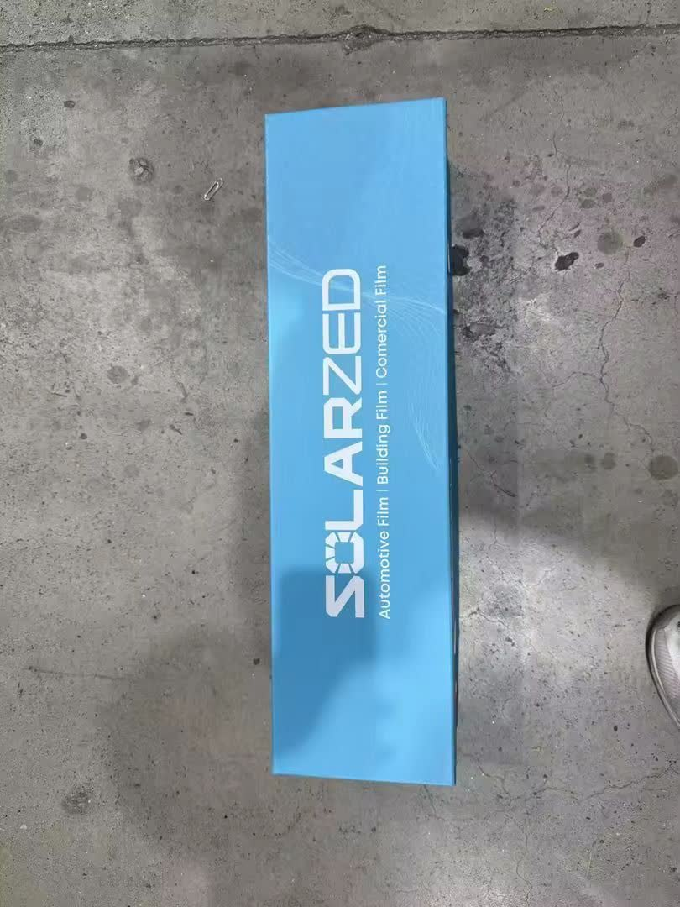
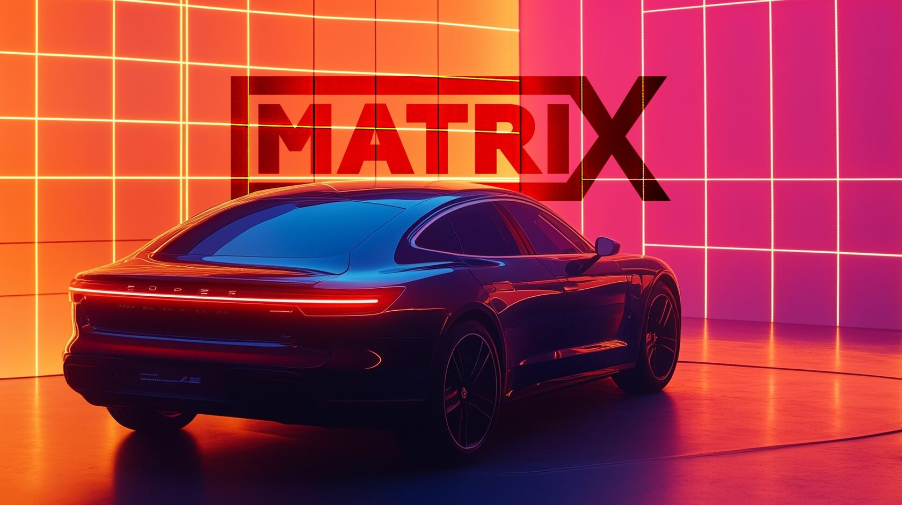

01 / FILM
Film Warranty
For confirmed product defects under normal use, assessed against the applicable film model and approved warranty terms.
LEARN MOREPremium automotive film, installed with precision — and a verified digital record for every window you tint.
 UV WINDOW FILMGlass protectionCERAMIC COATINGBody protection
UV WINDOW FILMGlass protectionCERAMIC COATINGBody protectionExplore automotive window tint and keep the film model, roll serial and installed glass documented for your vehicle.
From the left and right side windows to the rear windshield, record exactly where your Solarzed film was installed and who completed the work.

Product, installation and documentation — connected.
Film, installation and digital documentation
Choose the exact glass that was tinted
Find your registered installation record
Film and installation terms defined separately
Three connected parts.
Clear terms for the film, the installation
and the record that brings them together.
For confirmed product defects under normal use, assessed against the applicable film model and approved warranty terms.
LEARN MORE
For verified workmanship issues, with conditions and coverage periods separate from the film itself.
LEARN MORE
 DIGITAL
DIGITALA connected certificate for the product, vehicle, original customer and warranty status — with one place to find the details.
LEARN MOREProposed policy v1.0. Product-specific coverage periods remain subject to approval. Registration does not by itself activate warranty coverage.
Left front. Right rear. The back windshield. The hood and every panel.
Every installation is different. Record exactly what was covered, and keep the complete picture in one place.
Choose your next step.
For product information, installation records
and warranty guidance.
WINDOW FILMSFilm · Installation · Digital warranty